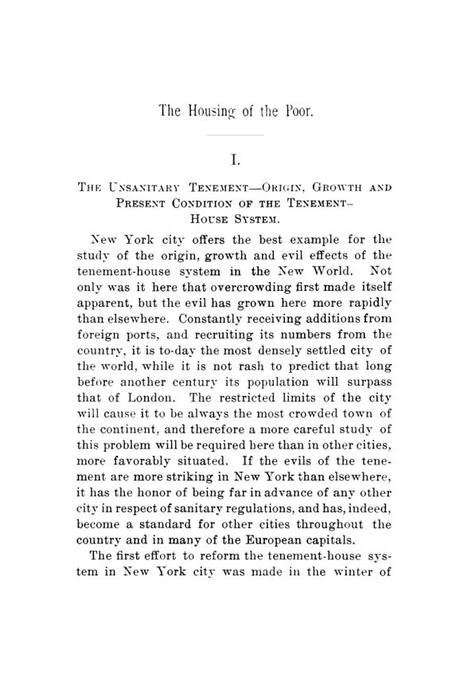

Reynolds, 1893: por que o pobre pagava caro para morar mal
Leitura: 14 min
No ensaio premiado de 1892, Marcus T. Reynolds mediu aluguéis, densidades e mortalidade nos cortiços americanos e concluiu que a saída não era caridade nem decreto, mas oferta melhor pelo mesmo aluguel.


A planta é de 1863. Um prédio de Nova York, na Broadway, perto do Central Park, foi projetado para doze famílias por andar. Cada andar tinha 12 salas e 21 quartos de dormir; só seis desses quartos recebiam luz e ar sem passar pela sala da família. Os outros eram escuros, abafados e sem ventilação. Não era um abrigo de miseráveis: o prédio vivia lotado de famílias que podiam pagar bem e queriam morar com respeitabilidade.
A planta está no primeiro capítulo de The Housing of the Poor in American Cities, de Marcus T. Reynolds, o ensaio vencedor do prêmio da American Economic Association de 1892, publicado em março e maio de 1893 num número duplo das Publications. São nove capítulos, das páginas 9 a 132, mais uma bibliografia em inglês, francês e alemão. Reynolds avisa que deixou de fora, de propósito, as descrições de casos de sofrimento, já pintadas com as cores mais escuras por quem trabalhava entre os pobres. Seu interesse é outro: os males do cortiço vistos do ponto de vista econômico.
Quão apinhada era Nova York?
Em dezembro de 1864, o levantamento sanitário da cidade contou 15.309 cortiços (tenements, prédios de aluguel ocupados por várias famílias que dividem escadas, pátios e latrinas), onde viviam 110 mil famílias e 795.592 pessoas. Certos distritos chegavam a 290 mil habitantes por milha quadrada. O East London, único rival à altura, tinha 175.815. Em setembro de 1891, a junta de saúde já registrava 1.225.411 pessoas em cortiços.
O contraste preferido do autor é a Filadélfia, a cidade das casas. Lá, 84,64% das famílias moravam sozinhas numa construção; em Nova York, só 12,02%. A diferença não era só de costume. A Filadélfia se espalhava por mais de 82.560 acres; a ilha de Manhattan tinha 12.673. Reynolds prevê que os limites geográficos fariam de Nova York, para sempre, a cidade mais apertada do continente.
Quanto sobrava no fim do ano?
Para saber que moradia o operário podia pagar, Reynolds recorre ao 16º relatório do Bureau de Estatísticas do Trabalho de Massachusetts. O salário semanal médio dos homens era de US$ 11,85. O das mulheres correspondia a 51,39% disso; o das crianças, a 32,15%. Na indústria têxtil, a média de todos os empregados mal passava de US$ 6,91 por semana.
Em 1885, o mesmo bureau reuniu 19 orçamentos familiares. A família média tinha 5,21 pessoas, ganhava US$ 803,47 por ano e gastava US$ 754,42. Sobravam US$ 49,05 para qualquer emergência. A conclusão de Reynolds é a mais importante do livro: seja qual for o caminho para dar casas melhores aos pobres, não pode ser o de cobrar mais. É preciso entregar mais valor pelo mesmo aluguel.
Aqui o autor confronta a Lei de Engel, a regularidade estatística formulada pelo Dr. Engel, chefe do bureau prussiano de estatística, segundo a qual a parcela da renda gasta com comida cai à medida que a renda sobe. Reynolds confirma essa parte. Mas Engel também dizia que a fatia do aluguel era invariavelmente a mesma, qualquer que fosse a renda, e os números americanos desmentem: ela oscila de modo notável. Nos Estados Unidos, o aluguel levava 18,58% do gasto operário; na Europa, 12,74%.
Se a comida pesa mais que o teto, por que priorizar a moradia? A resposta de Reynolds é que as duas coisas não se medem pelo preço. Comida simples quase não faz mal; casa insalubre fere o corpo e o caráter de quem mora nela. Um dinheiro extra, diz ele, rende mais se gasto no conforto da casa do que na qualidade do prato.
Por que o aluguel do pobre era tão caro?
Porque a demanda superava muito a oferta perto dos locais de trabalho. O operário podia morar fora da cidade, mas raramente aceitava somar uma hora ou mais de deslocamento ao dia de trabalho. Antigos inquilinos que juntavam um pequeno capital construíam cortiços baratos, sabendo que qualquer cômodo perto do emprego seria disputado, por pior que fosse. Reparos quase nunca eram feitos. Reynolds cita Lord Salisbury:
“O mal é causado diretamente pela prosperidade” (“The evil is directly caused by prosperity”)
Os exemplos de retorno são extremos. Na Bedford Street, na Filadélfia, um pardieiro avaliado em US$ 500 rendia US$ 80 por mês. Testemunhas ouvidas por uma comissão do Senado declararam que 40% ao ano era um juro médio razoável sobre imóveis de cortiço, e houve relatos de 100% ou mais. Em Nova York, um cômodo com alcova escura custava US$ 10 por mês; sala, dois quartos e cozinha, US$ 22.
A família pagava como podia. Recebia pensionistas no mesmo cômodo, sem alugar espaço maior. Alugava o quarto durante o dia para costureiras e costureiros que faziam roupa por peça, a confecção de cortiço que depois ia para as lojas da cidade. E cortava combustível, comida e roupa. O aluguel alto, portanto, não aparece só no recibo: ele produz a superlotação.
O cortiço matava mais?
Em alguns lugares, muito mais. No Gotham Court, um bloco na Cherry Street, a mortalidade na última grande epidemia de cólera chegou a 195 por mil habitantes. Ali, de 138 crianças nascidas em três anos, apenas 61 sobreviveram. Em 1889, a taxa de mortalidade de Nova York era de 25,19 por mil, contra 19,7 na Filadélfia e 17,4 em Londres.
Reynolds, porém, não esconde um dado que contraria sua tese. O censo de 1888 da população de cortiços apontou mortalidade de 26,11 por mil entre seus 1.117.257 moradores, abaixo da média geral da cidade, de 26,33. E a mortalidade era maior nas casas com menos moradores. A explicação oferecida pelas autoridades: os prédios grandes eram mais fáceis de inspecionar, e de lá os doentes iam mais para o hospital. O problema, sugere o próprio dado, não era a densidade em si, mas a falta de fiscalização e de projeto.
O argumento que Reynolds julga decisivo é o do contágio. Quem dorme no cortiço se espalha de manhã pela cidade inteira, costura roupa vendida nas melhores lojas e lava a roupa dos ricos. Só os dispensários públicos de Nova York atendiam 1,5 milhão de pessoas por ano, quase todas de distritos de cortiço. Para o autor, é o interesse próprio que acabará por fazer valer o que a humanidade já recomendava.
Desapropriar resolve?
A Inglaterra tentou. Com as leis de 1875 e 1879, o Metropolitan Board of Works de Londres limpou 42 acres onde viviam 20.335 pessoas. O prejuízo líquido foi estimado em £1.211.336, cerca de £60 por pessoa supostamente beneficiada.
O efeito colateral é o que interessa ao economista. Como a desapropriação pagava mais do que o mercado, muita gente comprou imóveis e torceu para que se deteriorassem, à espera de vendê-los ao poder público por um preço artificial. A lei criou, nas palavras do autor, um prêmio para o descaso. Em cinco outras cidades inglesas, o custo líquido passou de 30% do valor original dos imóveis.
Glasgow é o contraexemplo. Em 1866, a cidade decidiu recuperar 88 acres do centro antigo. Um agente privado negociou cada compra individualmente, e nenhuma melhoria que valorizasse um ponto foi feita antes de todo o terreno afetado estar comprado. Os inquilinos só eram retirados quando havia lugar para eles. O imposto levantou £350 mil; o custo líquido ficou em cerca de £180 mil. A mortalidade caiu de 32,4 por mil em 1868–70 para 25,5 em 1880–82. Mas os sete cortiços-modelo erguidos pela prefeitura, por £90 mil, foram vendidos: davam prejuízo e eram vistos como caridade pública. Reynolds conclui que a desapropriação seria medida extrema para os Estados Unidos, útil no máximo em pequena escala.
O que a regulação conseguiu?
As regras da junta de saúde de Nova York e do Brooklyn, diz Reynolds, viraram modelo no mundo. Exigiam 600 pés cúbicos de ar por morador, uma latrina para cada quinze ocupantes, área de janela de pelo menos um décimo do piso, água em todos os andares e inspeção duas vezes por ano. Só em 1891 foram 54.643 inspeções. O proprietário respondia, em primeiro lugar, pelas multas.
O autor reconhece o avanço, mas desconfia do atalho. Subsídios ou abatimento de impostos para cortiços-modelo lhe parecem muito questionáveis. Para encerrar o capítulo, ele toma emprestada uma frase do livro Improved Dwellings for the Laboring Classes, de Alfred T. White: de nada adianta proibir as casas ruins se as boas não forem construídas antes.
“Nenhuma lei pode ser aplicada com tanto rigor quanto a lei da oferta e da procura” (“No law can be enforced so rigidly as the law of supply and demand”)
Filantropia com dividendo fecha a conta?
O modelo vem de Londres. Peabody doou ao todo £500 mil para moradias populares. Os curadores trataram a doação como capital permanente, com dividendos limitados a 3% ao ano, e o fundo chegou a £1.023.446. A procura fala por si: quando os prédios de Bedfordbury abriram, 2.500 pessoas disputaram 146 moradias.
A Improved Industrial Dwellings Company mostra que densidade não é sinônimo de doença. Seus prédios abrigavam cerca de 750 pessoas por acre, contra 42 na média da cidade, e ainda assim a mortalidade, em dezesseis anos, foi de 16,7 por mil, contra 23,4 em Londres. O desenho, e não a quantidade de gente, fazia a diferença.
No Brooklyn, Alfred T. White abriu os Home Buildings em 1877 e os Tower Buildings em 1879. Cada família tinha acesso privativo, cômodos com luz direta, pia, tanque e latrina exclusivos. Uma moradia de três cômodos saía por US$ 6 por mês. O aluguel subia dez centavos por semana a cada andar que se descia, e White via nisso um subsídio cruzado: o mecânico que pagava mais embaixo ajudava a baratear o operário que subia alguns lances.
Em Nova York, a Tenement-House Building Company abriu em dezembro de 1887 seis prédios na Cherry Street, com custo total de US$ 152.715,13. Dois cômodos custavam de US$ 7 a US$ 9 por mês. Os pátios largos reduziam a capacidade de aluguel em 30%, a empresa recusava lojas e proibia trabalho fabril nos apartamentos, e os dividendos eram limitados a 4%. O excedente ia para um fundo dos inquilinos, que podia pagar o aluguel em caso de doença ou desemprego. Em 1890, a perda com vagos foi de US$ 731,83 sobre uma capacidade de US$ 13 mil, e houve só seis despejos.
Para Reynolds, o segredo dessas empresas é a disciplina comercial. O que cheirar a caridade afasta os melhores inquilinos e humilha os que ficam. Os casos de Londres, Brooklyn, Nova York e Filadélfia provariam que filantropia com retorno de cinco por cento já era fato consumado, e é isso que o capital privado precisa ver para entrar no negócio.
“Aluguel justo, e não caridade, é do que o operário precisa” (“Fair rents, not charity, is what the workingman requires”)
Por que o pobre pagava mais pela farinha?
O capítulo final traz a observação mais moderna do ensaio. Pelas contas do autor, 57% da renda da família operária ia para pequenas vendas nos porões dos cortiços. A dona de casa gastava 30 ou 40 centavos por dia e comprava por onça o que os outros compravam por libra. Sem dinheiro, sem gelo e sem espaço para estocar, ela não tinha como comprar em quantidade.
Daí sua proposta original, o que ele chama de cortiço com pensão: um prédio-modelo com cozinha central no porão, compras no atacado, pratos encomendados por formulário e enviados aos apartamentos por elevador. A família economizaria fogão, combustível e um cômodo, o ar do prédio melhoraria, e as mulheres ganhariam tempo para trabalhar. Tudo em base comercial, não caritativa.
Abaixo de todos estavam os albergues baratos, que em Nova York ofereciam a noite por 5 a 25 centavos. Somadas às delegacias, as hospedagens chegaram a 5.121.659 em um ano, uma média de 14 mil por noite. Reynolds pede regulamentação rigorosa e albergues-modelo, que considera também um bom investimento.
E a casa no subúrbio?
É a melhor solução, admite o autor, e a menos viável para a maioria. Em Londres, a Great Eastern Railway vendeu passes semanais a um xelim para operários, usados por cerca de 7 mil pessoas por dia; trens especiais, alegou a ferrovia, não sairiam por menos de dois xelins por cabeça. Na Filadélfia, as associações cooperativas de construção, introduzidas em 1831, já eram cerca de 500 e explicavam boa parte do sucesso da cidade.
O resumo final é uma estratégia em camadas. Os operários mais bem pagos devem sair da disputa pelos melhores cômodos, em casas independentes como as de Warren Place, no Brooklyn, que custavam pouco menos de US$ 1.100 cada; numa versão sobreposta proposta por Reynolds, o aluguel cairia para US$ 13,25 por mês. Os demais ficariam nos cortiços-modelo; os mais pobres, nos cortiços com pensão e nos albergues-modelo. A lei deve exigir agente residente e padrões mínimos, mas sem interferência desnecessária na oferta e na procura.
Na minha leitura
Na minha leitura, o ensaio acerta no diagnóstico central: o aluguel do pobre era alto porque faltava oferta perto do emprego, e toda solução que ignorasse isso fracassava. A desapropriação londrina pagou caro e premiou o descaso; a regra que exige pátio e janela melhora a casa, mas reduz cômodos alugáveis, como a própria Cherry Street mostra. Reynolds percebe o dilema permanente da política habitacional: padrão mínimo, custo de transporte e preço da terra formam um só problema. Retirar a camada de cima da disputa para aliviar as de baixo, como defendia Sydney Waterlow, é uma intuição que a economia urbana ainda discute.
O que permanece é a descoberta de que o pobre paga mais caro por quase tudo: pela farinha comprada por onça, pelo carvão comprado por balde, pelo cômodo perto da fábrica. Quem desenha política social sem levar em conta esse custo extra da pobreza costuma errar o alvo.
Glossário
- Cortiço (tenement)
- prédio de aluguel ocupado por três ou mais famílias independentes que dividem escadas, pátios ou latrinas, pela definição da junta de saúde de Nova York.
- Lei de Engel
- regularidade estatística segundo a qual a parcela da renda gasta com alimentação cai à medida que a renda da família sobe.
- Desapropriação (expropriation)
- compra compulsória de imóveis pelo poder público para demolir e reconstruir áreas insalubres.
- Cortiço-modelo (model tenement)
- prédio popular projetado com luz, ar e saneamento, erguido por empresas com dividendos limitados.
- Cortiço com pensão (boarding tenement)
- proposta de Reynolds: prédio-modelo com cozinha central que compra no atacado e entrega refeições aos apartamentos.
- Associação cooperativa de construção
- sociedade em que os sócios pagam cotas periódicas e tomam empréstimos do fundo comum para comprar ou construir a casa própria.
Fontes
- The Housing of the Poor in American Cities (pp. 9–132). JSTOR · Internet Archive (PDF)
- Sumário da edição no JSTOR: Publications of the American Economic Association, vol. 8, nº 2/3.
Documento em domínio público (EUA, publicado antes de 1931), via JSTOR Early Journal Content e Internet Archive. Resumo e comentário do autor deste site, sem afiliação com a American Economic Association. Encontrou um erro? Escreva: a correção é publicada no próprio texto, com data.
← Nº 36 · Chautauqua, 1892: a nova economia, o fisco e o agricultor Nº 38 · Balch, 1893: a França que ajudava os pobres, mas não lhes devia nada →